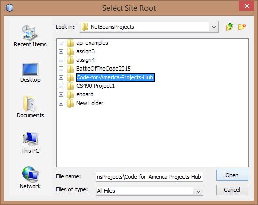
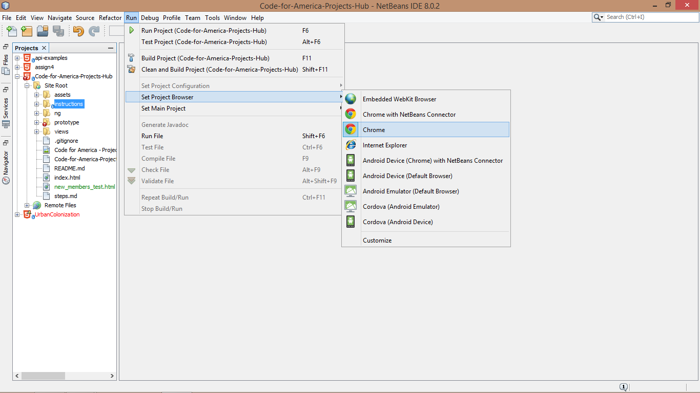

-
You will need a server to host our app
-
I recommend downloading
Netbeans
for 2 reasons:
- it will run most applications that we have on Code For America-KC
- it integrates well with Git.(great IDE for beginners)
-
You need your own copy("Fork") of this project
-
Make your own Fork of the app in your Github account or by cloning the project on your machine.
-
Clone your project into Netbeans
-
On the toolbar click Team/Git/Clone...
- Enter this Repository URL:
https://github.com/codeforkansascity/Code-for-America-Projects-Hub.git
leave the User and Password fields blank, click next.

- Ensure that the gh-pages* branch is selected, click next.

- Leave these fields as they are.
Ensure that Scan for Netbeans Projects after Clone is checked, click finish.

-
Import your project into Netbeans
- click Create Project...

- click HTML5 Application with Existing Sources, click next.

- Next to Site Root click Browse... to navigate to the project you just cloned.

- Click Code-for-America-Projects-Hub folder, click Open.

- Step 4 should auto-populate all fields, leave them as they are, click Finish.

- You are done importing the project.
you should see it appear in the Projects sidebar.

- click Run/Select Project Browser.
select the browser you would like to use.
(dont select the embedded browser or one with a netbeans connector)

- in the main project directory, right-click on index.html and select Run File

- You should see the main project open in your browser.

-
Making your first changes and submitting("Push") them
- in the main project directory double-click new_members_test.html to open for editing
- click HTML5 Application with Existing Sources, click next.
- Next to Site Root click Browse... to navigate to the project you just cloned.
- Click Code-for-America-Projects-Hub folder, click Open.
- Step 4 should auto-populate all fields, leave them as they are, click Finish.
- You are done importing the project.
you should see it appear in the Projects sidebar.